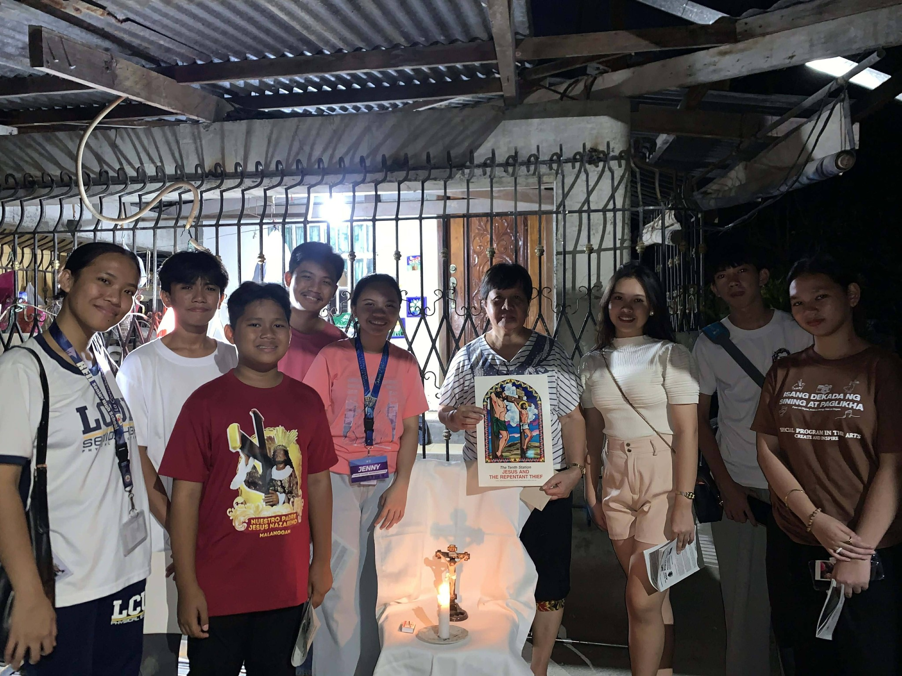
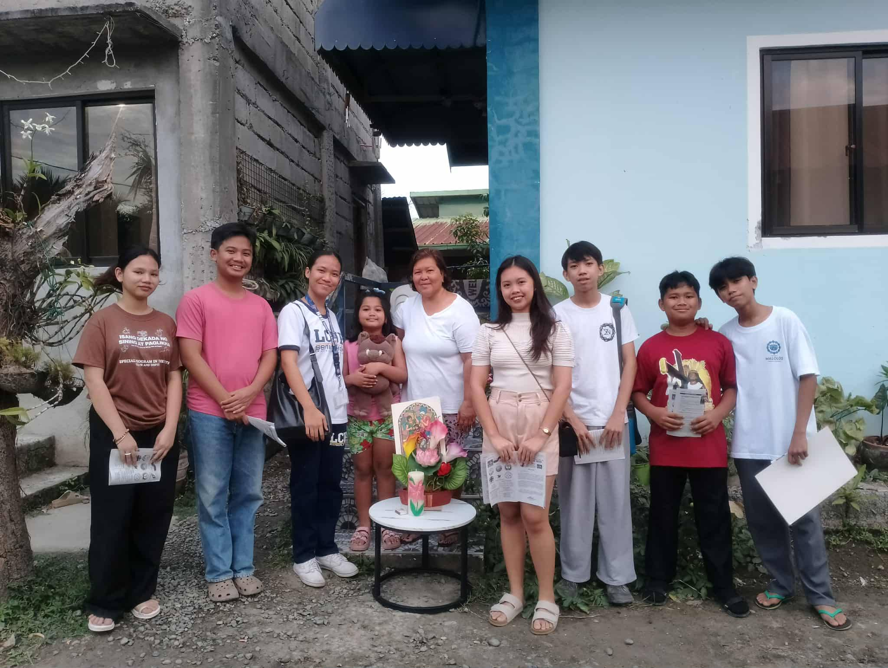
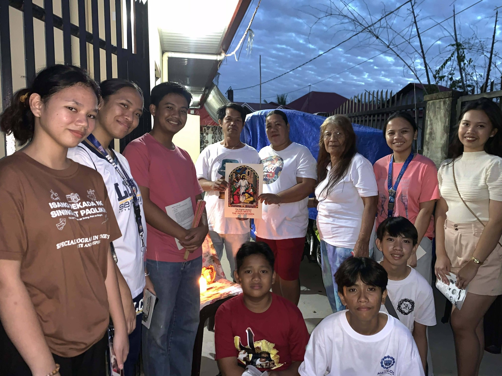

April 15, 2026
5:00 PM - 7:00 PM
San Isidro Labrador Parish Grounds
Via Crusis is a spiritual tradition where we reflect on the Passion of Christ through the 14 Stations of the Cross. It strengthens our faith, encourages community bonding, and deepens our prayer life. Our youth are encouraged to join and experience a meaningful journey of reflection and service.



Meditate on Christ's journey for our salvation.
Build friendships and community engagement.
Participate in active prayer and community service.